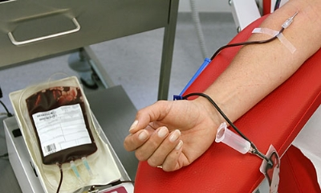

Kan bağışı hem toplumsal hem kişisel açıdan çok önemlidir.Vücuttaki kan hiçbir zaman değişmez.Sürekli aynı kanı kullanırız.Eğer kan verir isek vücut yeni kan üretir.Ve bu vücut için yararlıdır.Ayrıca kan verdiğimiz kişileri düşünün..Her yıl yüzlerce insan ölüyor.Bu insanlar kan bekliyor.Kan vermek hem bizim sağlığımız hem kan bekleyen kişilerin hayatları bakımından çok önemlidir.
Kan bağışı nedir ve kan bağışı nasıl yapılır?
Kan bağışı, gönüllü ve kan bağışına uygun bir bağışçıdan (donör) çeşitli kan ürünleri elde etmek amacıyla kan merkezleri tarafından kan alınmasıdır. Ülkemizde Sağlık Bakanlığı, Kızılay, SSK, Üniversite hastanelerine bağlı bir çok kan merkezi ve kan istasyonu bulunmaktadır. 18-65 yaşı arasında, vücut ağırlığı 50 kg'ınüzerinde sağlıklı kişiler kan bağışı yapabilirler. Bir seferde yarım litreden az kan alınmaktadır. Bu miktar vücutta bulunan kanın yaklaşık olarak %8-9'u kadardır. Erkekler en sık 2 ayda bir, kadınlar ise 3 ayda bir olmak üzere ve yılda en fazla 4 ünite kanı rahatlıkla bağışlayabilirler. Kan bağışı yapanlar, kan gruplarını, hemoglobin miktarlarını öğrenirler. Ayrıca kendilerinde Hepatit B, Hepatit C, Sifilizve AIDS bulunup bulunmadığını da öğrenirler.